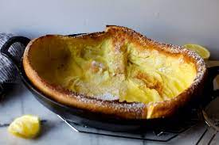

Dutch Baby Pancake

Description
Dutch baby pancakes are like a hybrid (or a love child, if you will) of a pancake, a crepe, and a popover — all in one giant skillet. It feels like a party trick, but for the breakfast crowd. I break these out whenever anyone in my house needs a little extra delight in their day.
Ingredients
- 3 tablespoons butter
- 3 eggs
- ¾ cup milk, room temperature
- ¾ cup flour
- 1 tablespoon sugar
- 2 teaspoons vanilla extract
- 1 pinch salt
- 2 tablespoons confectioners' sugar, or to taste
Directions/Steps
- Preheat the oven to 400 degrees F (200 degrees C).
- Place butter in an ovenproof pan or cast iron skillet and place in the oven.
- Meanwhile, combine eggs and milk in a bowl. Add flour, sugar, vanilla extract, and salt and whisk for 1 minute to remove lumps.
- Remove hot pan from oven and swirl melted butter to coat. Pour batter into the hot pan and return it to the oven.
- Bake in the preheated oven until the pancake is puffed in the center and golden brown on the edges, 20 to 25 minutes.
- Dust with confectioners' sugar and serve immediately.
Chef's Tips
- Use room-temperature milk and eggs to ensure a fluffier, airier pancake.
- Mix ingredients in a food processor or blender to make the batter extra smooth.
- Allow batter to rest while you heat your pan so it's super hot. This gives the flour time to absorb the liquid.
- Toppings can be sweet or savory.
- Go classic with confectioners' sugar and a squeeze of lemon juice, or top with berries, fried apples, syrup, whipped cream, nuts, jam, or Nutella.
- Savory toppings can include crème fraîche, smoked salmon, thinly sliced ham, or herbed cheese.
Dutch Baby pancakes start deflating as soon as you pull them from the oven, so get your photos quickly and be ready to serve hot from the skillet.